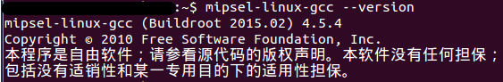

交叉编译mips架构gdb+gdbServer
前言
GDB + IDA + burp是吃饭三件套，一个能使用的gdb和gdbserver是调试IoT设备二进制漏洞的必备条件，之前都是从github下载他人编译好的，一旦他人gdb和gdbserver用不了的话，直接歇菜！所以才有了这篇博客，自己编译生成一次能够在设备上使用的gdb！
交叉编译是一门大学问，其中涉及的知识点还挺多的，这次走了不少弯路，在这里将遇到的问题进行总结吧！
相关工具
这里的工具选择并不要求完全一样，我只是在这个环境第一次成功，然后直接记录下来了。
- ubuntu：14.04和16.04都可以的。
- buildroot：源码下载选择的是buildroot2015.02，其中包含的kernel版本以及gcc版本比较老。
- gdb：源码下载选择gdb-6.8a.tar.gz和gdb-7.12.tar.gz。
buildroot是为了生成交叉编译工具链，之后交叉编译gdb。
相关步骤
buildroot
- Target options：MIPS小端，ELF，mips 32
- Toolchain：Kernel Headers version选择2.6.32，C library选择uClibc，GCC编译器版本选择gcc 4.5.x
make，接下来等就完事了，时间看网速，很多东西有梯子下载会快些。完成之后需要的gcc会在bulidroot的output目录下。
可以添加环境变量
在/etc/profile或者
/.bashrc或者/.zshrc中添加export PATH=$PATH:xxx/buildroot-2015.02/output/host/bin
之后source /etc/profile

gdb
cd gdb-6.8
CC="xxx/project/buildroot-2015.02/output/host/usr/bin/mipsel-linux-gcc "
./configure --target=mipsel-linux --host=mipsel-linux CFLAGS='-static'
make遇到的问题：
./readline/support/wcwidth.c
错误如下：
mipsel-linux-gcc -DHAVE_CONFIG_H -DCROSS_COMPILING -I. -I.././readline -DRL_LIBRARY_VERSION='"5.1"' -static -c .././readline/support/wcwidth.c .././readline/support/wcwidth.c:17:29: 错误：expected ‘)’ before ‘ucs’ .././readline/support/wcwidth.c:67:21: 错误：expected ‘)’ before ‘ucs’ .././readline/support/wcwidth.c:134:28: 错误：expected ‘;’, ‘,’ or ‘)’ before ‘*’ token .././readline/support/wcwidth.c:156:32: 错误：expected ‘)’ before ‘ucs’ .././readline/support/wcwidth.c:225:32: 错误：expected ‘;’, ‘,’ or ‘)’ before ‘*’ token Makefile:166: recipe for target 'wcwidth.o' failed解决办法：
在gdb根目录下的readline/support/wcwidth.c添加#include <stddef.h>
configure: error: no termcap library found
tar解压
./configure
在termcap-1.3.1根目录下的Makefile文件中修改CC AR RANLIB为：
CC = xxx/project/buildroot-2015.02/output/host/usr/bin/mipsel-linux-gcc AR = xxx/project/buildroot-2015.02/output/host/usr/bin/mipsel-linux-ar RANLIB = xxx/project/buildroot-2015.02/output/host/usr/bin/mipsel-linux-ranlibmake，生成的libtermcap.a文件，将其拷贝到交叉编译工具链的lib文件夹。
~ mipsel-linux-gcc -print-file-name=libc.a xxx/project/buildroot-2015.02/output/host/usr/mipsel-buildroot-linux-uclibc/sysroot/usr/lib/libc.a ~ cp libtermcap.a xxx/project/buildroot-2015.02/output/host/usr/mipsel-buildroot-linux-uclibc/sysroot/usr/lib/
./gdb/Makefile
cc1: warnings being treated as errors cp-name-parser.y: 在函数‘cp_comp_to_string’中: cp-name-parser.y:1980:20: 错误：在‘enum demangle_component_type’和‘enum <匿名>’间比较 cp-name-parser.y:1985:25: 错误：在‘enum demangle_component_type’和‘enum <匿名>’间比较 Makefile:1110: recipe for target 'cp-name-parser.o' failed make[2]: *** [cp-name-parser.o] Error 1 make[2]: Leaving directory 'xxx/project/gdb-6.8/gdb' Makefile:10191: recipe for target 'all-gdb' failed make[1]: *** [all-gdb] Error 2 make[1]: Leaving directory 'xxx/project/gdb-6.8' Makefile:701: recipe for target 'all' failed根据报错知道问题出现在gdb根目录下的gdb文件夹中，打开其中Makefile文件
定位Werror，删除WERROR_CFLAGS = 之后的-Werror
之后会在/gdb-6.8/gdb和/gdb6.8/gdb/gdbserver下生成gdb和gdbserver
~ file gdb
gdb: ELF 32-bit LSB executable, MIPS, MIPS32 version 1 (SYSV), statically linked, not stripped
~ file gdbserver/gdbserver
gdbserver/gdbserver: ELF 32-bit LSB executable, MIPS, MIPS32 version 1 (SYSV), statically linked, not stripped可以去掉符号表
mipsel-linux-strip gdb
mipsel-linux-strip gdbserver/gdbserver